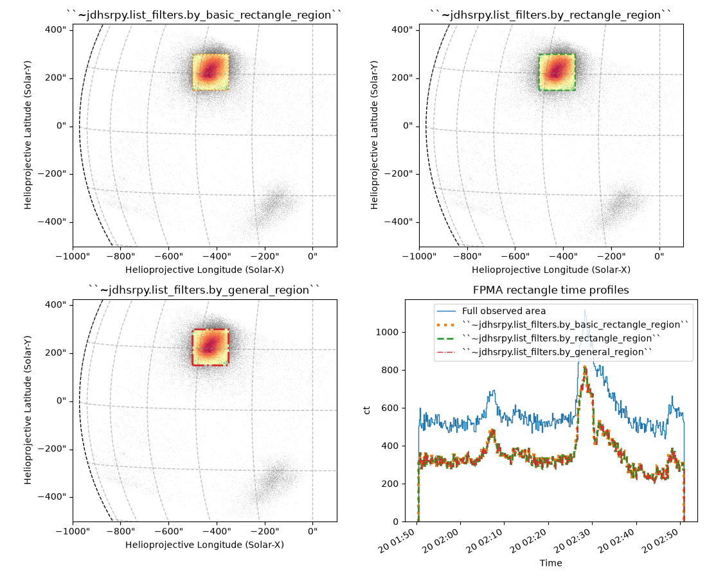
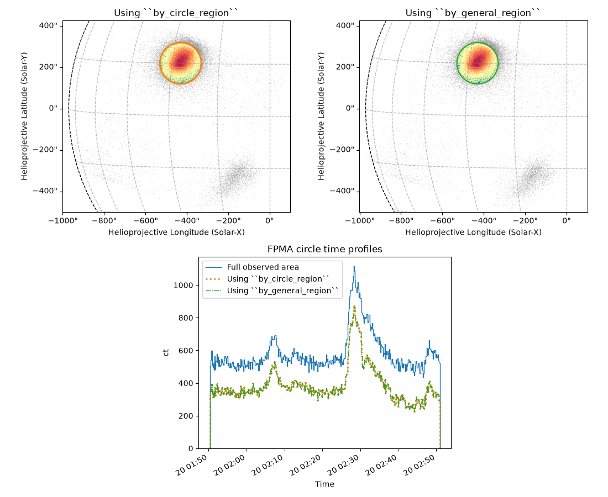
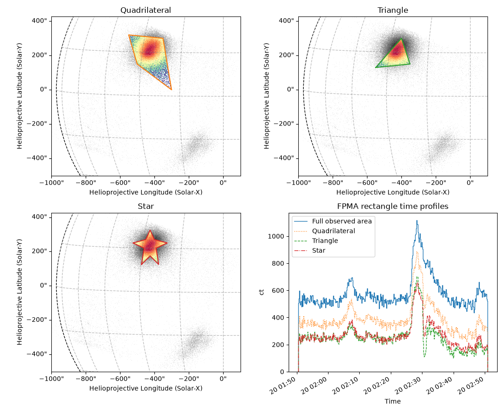
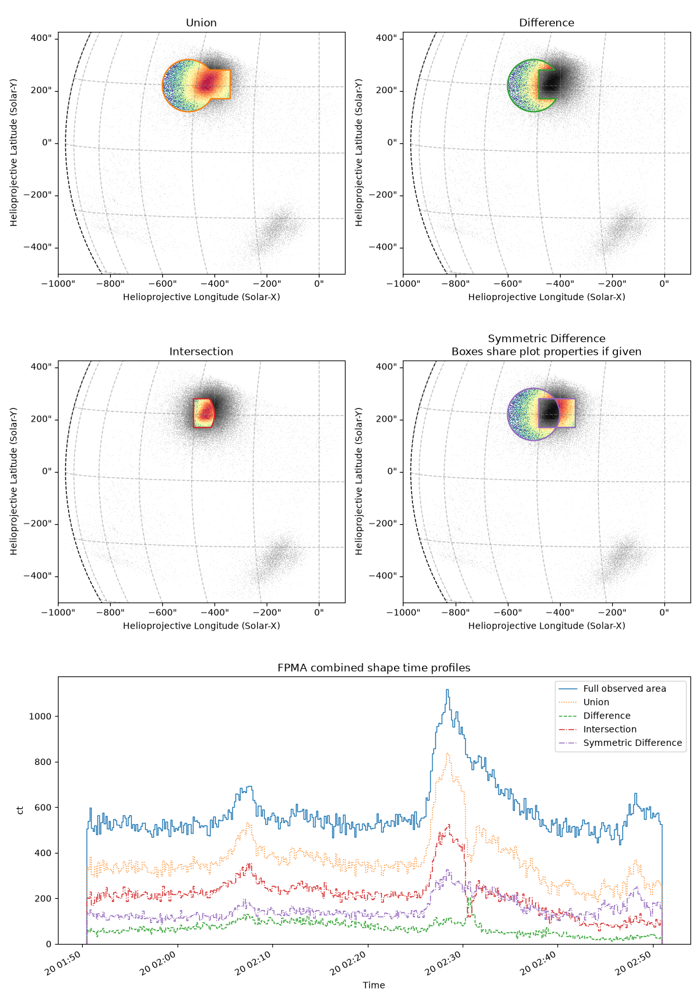

Note
Go to the end to download the full example code.
Filter By Any Shape
This example shows using more advanced features of the
jdhsrpy.list_filters region filters.
import ntpath
import os
import urllib.request
import astropy.units as u
import matplotlib.pyplot as plt
import numpy as np
from astropy.visualization import time_support
from matplotlib import gridspec
from jdhsrpy import TEST_DATA_LOCATION
from jdhsrpy.list_filters import (
by_basic_rectangle_region,
by_circle_region,
by_general_region,
by_rectangle_region,
)
from jdhsrpy.nustar_core import NustarEvt, draw_grid
from jdhsrpy.shapes import circle_shape, rectangle_shape
from jdhsrpy.utils import arcsec_points_to_shape
from jdhsrpy.visualize import shape_plot, time_profile_plot
Download an example “sunpos” NuSTAR EVT file.
url = f"{TEST_DATA_LOCATION}/test_nustar_data/nu20619003001A06_cl_sunpos.evt"
filename = os.path.join(os.getcwd(), ntpath.split(url)[1])
if not os.path.isfile(filename):
urllib.request.urlretrieve(url, filename)
As usual, use the class to load in and work with the file.
nustar_object = NustarEvt(evt_filename=filename)
Let’s get the default count time profile and image at the start before moving on.
bottom_left = [-1000, -500] << u.arcsec
top_right = [100, 425] << u.arcsec
times, ct = nustar_object.count_time_profile_array()
m = nustar_object.nustar_map(bottom_left, top_right)
Filter by a rectangle region
There are two functions specifically for filtering to a rectangle region. This is probably the most basic and common shape a user might want with which to start.
There is by_basic_rectangle_region and by_rectangle_region
which should return the exact same result.
The former is really simple and just compares each counts X and Y
position to the maximum and minimum positions of the boxes sides. The
latter uses the by_general_region underneath taking advantage of
the fancy Shapely
package.
Here, we will show the use of both region filters.
reg_bottom_left = [-500, 150] << u.arcsec
reg_top_right = [-350, 300] << u.arcsec
basic_rect_event_list = by_basic_rectangle_region(
nustar_object.cleaned_evt_data, reg_bottom_left, reg_top_right
)
mbr = nustar_object.field_of_view_map(event_data=basic_rect_event_list)
rect_event_list = by_rectangle_region(
nustar_object.cleaned_evt_data, reg_bottom_left, reg_top_right
)
mr = nustar_object.field_of_view_map(event_data=rect_event_list)
Let’s also get the time profile from these region selections.
timesbr, ctbr = nustar_object.count_time_profile_array(event_data=basic_rect_event_list)
timesr, ctr = nustar_object.count_time_profile_array(event_data=rect_event_list)
Also we can use ~jdhsrpy.list_filters.by_general_region filter to
produce the same result.
vertices = [
reg_bottom_left,
[reg_bottom_left[0], reg_top_right[1]] << u.arcsec,
reg_top_right,
[reg_top_right[0], reg_bottom_left[1]] << u.arcsec,
]
polygon = arcsec_points_to_shape(vertices)
general_rect_event_list = by_general_region(nustar_object.cleaned_evt_data, polygon)
mgr = nustar_object.field_of_view_map(event_data=general_rect_event_list)
timesgr, ctgr = nustar_object.count_time_profile_array(
event_data=general_rect_event_list
)
Another way to use by_general_region here would be to use the
jdhsrpy.shapes.rectangle_shape function to create the needed
polygon and pass that to the general region function.
alternative_polygon = rectangle_shape(reg_bottom_left, reg_top_right)
Instead, let’s use the rectangle alternative_polygon to plot the
region border.
We can use jdhsrpy.visualize.shape_plot for this.
We can visually see all of these result in the same region and counts are selected in each case.
fig = plt.figure(figsize=(11, 9))
gs = gridspec.GridSpec(2, 2)
axes0 = fig.add_subplot(gs[0, 0], projection=m)
m.plot(axes=axes0, cmap="Greys")
mbr.plot(axes=axes0)
draw_grid(m, axes0)
shape_plot(alternative_polygon, m.coordinate_frame, color="tab:orange", ls=":")
axes0.set_title("``~jdhsrpy.list_filters.by_basic_rectangle_region``")
axes1 = fig.add_subplot(gs[0, 1], projection=m)
m.plot(axes=axes1, cmap="Greys")
mr.plot(axes=axes1)
draw_grid(m, axes1)
shape_plot(alternative_polygon, m.coordinate_frame, color="tab:green", ls="--")
axes1.set_title("``~jdhsrpy.list_filters.by_rectangle_region``")
axes2 = fig.add_subplot(gs[1, 0], projection=m)
m.plot(axes=axes2, cmap="Greys")
mgr.plot(axes=axes2)
draw_grid(m, axes2)
shape_plot(alternative_polygon, m.coordinate_frame, color="tab:red", ls="-.", lw=2)
axes2.set_title("``~jdhsrpy.list_filters.by_general_region``")
time_support(format="unix_tai")
axes3 = fig.add_subplot(gs[1, 1])
time_profile_plot(times, ct, label="Full observed area", axes=axes3)
time_profile_plot(
timesbr,
ctbr,
label="``~jdhsrpy.list_filters.by_basic_rectangle_region``",
ls=":",
lw=3,
axes=axes3,
)
time_profile_plot(
timesr,
ctr,
label="``~jdhsrpy.list_filters.by_rectangle_region``",
ls="--",
lw=2,
axes=axes3,
)
time_profile_plot(
timesgr,
ctgr,
label="``~jdhsrpy.list_filters.by_general_region``",
ls="-.",
lw=1,
axes=axes3,
)
plt.title(f"FPM{nustar_object.fpm} rectangle time profiles")
plt.xticks(rotation=30, ha="right")
plt.ylabel(f"{ct.unit:latex}")
plt.xlabel("Time")
plt.legend()
plt.tight_layout()
plt.show()

INFO: Using image-based autoalignment [sunpy.map.mapbase]
INFO: Using image-based autoalignment [sunpy.map.mapbase]
INFO: Using image-based autoalignment [sunpy.map.mapbase]
It is clear that all the images and time profiles from the region selection filters return the same result.
To further make sure all regions are exactly the same we can just
subtract the map data and show the sum is 0.
diff0 = mr.data - mbr.data
diff1 = mr.data - mgr.data
print(
f"``~jdhsrpy.list_filters.by_rectangle_region`` minus ``~jdhsrpy.list_filters.by_basic_rectangle_region`` = {np.sum(diff0)}"
)
print(
f"``~jdhsrpy.list_filters.by_rectangle_region`` minus ``~jdhsrpy.list_filters.by_general_rectangle_region`` = {np.sum(diff1)}"
)
``~jdhsrpy.list_filters.by_rectangle_region`` minus ``~jdhsrpy.list_filters.by_basic_rectangle_region`` = 0.0
``~jdhsrpy.list_filters.by_rectangle_region`` minus ``~jdhsrpy.list_filters.by_general_rectangle_region`` = 0.0
Filter by a circle region
The ~jdhsrpy.list_filters.by_circle_region also exists.
center = [-430, 220] << u.arcsec
radius = 100 << u.arcsec
circle_event_list0 = by_circle_region(nustar_object.cleaned_evt_data, center, radius)
mcr = nustar_object.field_of_view_map(event_data=circle_event_list0)
timescr, ctcr = nustar_object.count_time_profile_array(event_data=circle_event_list0)
A circle is a little harder to define vertices for and so you might
think it would be tricky to use the ~jdhsrpy.list_filters.by_general_region
function for this.
However, we can use the Shapely package directly to make a circle
shape or we can use the ~jdhsrpy.shapes module. This module has
some pre-defines shapes ready for use.
Here we show an example using ~jdhsrpy.shapes.circle_shape.
circle_region = circle_shape(center, radius)
general_circle_event_list1 = by_general_region(
nustar_object.cleaned_evt_data, circle_region
)
mgcr = nustar_object.field_of_view_map(event_data=general_circle_event_list1)
timesgcr, ctgcr = nustar_object.count_time_profile_array(
event_data=general_circle_event_list1
)
We can then easily plot the results.
fig = plt.figure(figsize=(11, 9))
gs = gridspec.GridSpec(2, 4)
axes0 = fig.add_subplot(gs[0, :2], projection=m)
m.plot(axes=axes0, cmap="Greys")
mcr.plot(axes=axes0)
draw_grid(m, axes0)
shape_plot(circle_region, m.coordinate_frame, lw=2, color="tab:orange")
axes0.set_title("Using ``by_circle_region``")
axes1 = fig.add_subplot(gs[0, 2:], projection=m)
m.plot(axes=axes1, cmap="Greys")
mgcr.plot(axes=axes1)
draw_grid(m, axes1)
shape_plot(circle_region, m.coordinate_frame, color="tab:green")
axes1.set_title("Using ``by_general_region``")
time_support(format="unix_tai")
axes3 = fig.add_subplot(gs[1, 1:3])
time_profile_plot(times, ct, label="Full observed area", axes=axes3)
time_profile_plot(
timescr, ctcr, label="Using ``by_circle_region``", ls=":", lw=2, axes=axes3
)
time_profile_plot(
timesgcr, ctgcr, label="Using ``by_general_region``", ls="-.", axes=axes3
)
plt.title(f"FPM{nustar_object.fpm} circle time profiles")
plt.xticks(rotation=30, ha="right")
plt.ylabel(f"{ct.unit:latex}")
plt.xlabel("Time")
plt.legend()
plt.tight_layout()
plt.show()

INFO: Using image-based autoalignment [sunpy.map.mapbase]
INFO: Using image-based autoalignment [sunpy.map.mapbase]
Filter by any shape
The ~jdhsrpy.list_filters.by_general_region is very powerful since
any region that can be defined by providing vertices of a polygon is a
region by which we can filter.
Let’s try a few different shapes.
First, we’ll try some sort of a quadrilateral.
vertices0 = [
reg_bottom_left,
[-550, 320] << u.arcsec,
reg_top_right,
[-300, 0] << u.arcsec,
]
polygon0 = arcsec_points_to_shape(vertices0)
general_rect_event_list0 = by_general_region(nustar_object.cleaned_evt_data, polygon0)
mgr0 = nustar_object.field_of_view_map(event_data=general_rect_event_list0)
timesgr0, ctgr0 = nustar_object.count_time_profile_array(
event_data=general_rect_event_list0
)
Now a triangle.
vertices1 = [[-550, 130] << u.arcsec, [-400, 300] << u.arcsec, [-350, 150] << u.arcsec]
polygon1 = arcsec_points_to_shape(vertices1)
general_rect_event_list1 = by_general_region(nustar_object.cleaned_evt_data, polygon1)
mgr1 = nustar_object.field_of_view_map(event_data=general_rect_event_list1)
timesgr1, ctgr1 = nustar_object.count_time_profile_array(
event_data=general_rect_event_list1
)
Let’s be crazy and try a star.
vertices2 = [
[-475, 125] << u.arcsec, # bottom left
[-460, 220] << u.arcsec,
[-525, 250] << u.arcsec, # left
[-450, 270] << u.arcsec,
[-425, 325] << u.arcsec, # top point
[-400, 270] << u.arcsec,
[-325, 250] << u.arcsec, # right
[-390, 220] << u.arcsec,
[-375, 125] << u.arcsec, # bottom right
[-425, 175] << u.arcsec,
]
polygon2 = arcsec_points_to_shape(vertices2)
general_rect_event_list2 = by_general_region(nustar_object.cleaned_evt_data, polygon2)
mgr2 = nustar_object.field_of_view_map(event_data=general_rect_event_list2)
timesgr2, ctgr2 = nustar_object.count_time_profile_array(
event_data=general_rect_event_list2
)
We can then easily plot the results.
fig = plt.figure(figsize=(11, 9))
gs = gridspec.GridSpec(2, 2)
axes0 = fig.add_subplot(gs[0, 0], projection=m)
m.plot(axes=axes0, cmap="Greys")
mgr0.plot(axes=axes0)
draw_grid(m, axes0)
shape_plot(polygon0, m.coordinate_frame, color="tab:orange")
axes0.set_title("Quadrilateral")
axes1 = fig.add_subplot(gs[0, 1], projection=m)
m.plot(axes=axes1, cmap="Greys")
mgr1.plot(axes=axes1)
draw_grid(m, axes1)
shape_plot(polygon1, m.coordinate_frame, color="tab:green")
axes1.set_title("Triangle")
axes2 = fig.add_subplot(gs[1, 0], projection=m)
m.plot(axes=axes2, cmap="Greys")
mgr2.plot(axes=axes2)
draw_grid(m, axes2)
shape_plot(polygon2, m.coordinate_frame, color="tab:red")
axes2.set_title("Star")
time_support(format="unix_tai")
axes3 = fig.add_subplot(gs[1, 1])
time_profile_plot(times, ct, label="Full observed area", axes=axes3)
time_profile_plot(timesgr0, ctgr0, label="Quadrilateral", ls=":", axes=axes3)
time_profile_plot(timesgr1, ctgr1, label="Triangle", ls="--", axes=axes3)
time_profile_plot(timesgr2, ctgr2, label="Star", ls="-.", axes=axes3)
plt.title(f"FPM{nustar_object.fpm} rectangle time profiles")
plt.xticks(rotation=30, ha="right")
plt.ylabel(f"{ct.unit:latex}")
plt.xlabel("Time")
plt.legend()
plt.tight_layout()
plt.show()

INFO: Using image-based autoalignment [sunpy.map.mapbase]
INFO: Using image-based autoalignment [sunpy.map.mapbase]
INFO: Using image-based autoalignment [sunpy.map.mapbase]
Therefore, any region that can be defined by its vertices can be used to filter the NuSTAR data.
Combining shapes
Shapely polygons are great as it is very easy to combine them.
There may be others but Shapely offers 4 very nice methods on the
Polygon class. There are: union (1),
difference (2),
intersection (3),
and symmetric_difference (4).
Let’s define a couple of basic shapes to show these off.
c = [-500, 220] << u.arcsec
r = 100 << u.arcsec
bl = [-480, 170] << u.arcsec
tr = [-340, 280] << u.arcsec
circle = circle_shape(c, r)
rectangle = rectangle_shape(bl, tr)
Now let’s make the shapes.
union_shape = circle.union(rectangle)
difference_shape = circle.difference(rectangle)
intersection_shape = circle.intersection(rectangle)
symmetric_difference_shape = circle.symmetric_difference(rectangle)
We now have the shapes, let’s create the maps amnd time profiles from them.
# union shape
union_event_list1 = by_general_region(nustar_object.cleaned_evt_data, union_shape)
m_u = nustar_object.field_of_view_map(event_data=union_event_list1)
times_u, ct_u = nustar_object.count_time_profile_array(event_data=union_event_list1)
# difference shape
difference_event_list1 = by_general_region(
nustar_object.cleaned_evt_data, difference_shape
)
m_d = nustar_object.field_of_view_map(event_data=difference_event_list1)
times_d, ct_d = nustar_object.count_time_profile_array(
event_data=difference_event_list1
)
# intersection shape
intersection_event_list1 = by_general_region(
nustar_object.cleaned_evt_data, intersection_shape
)
m_i = nustar_object.field_of_view_map(event_data=intersection_event_list1)
times_i, ct_i = nustar_object.count_time_profile_array(
event_data=intersection_event_list1
)
# symmetric difference shape
symmetric_difference_event_list1 = by_general_region(
nustar_object.cleaned_evt_data, symmetric_difference_shape
)
m_sd = nustar_object.field_of_view_map(event_data=symmetric_difference_event_list1)
times_sd, ct_sd = nustar_object.count_time_profile_array(
event_data=symmetric_difference_event_list1
)
Now let’s plot the results.
fig = plt.figure(figsize=(11, 15.7))
gs = gridspec.GridSpec(3, 4)
axes0 = fig.add_subplot(gs[0, :2], projection=m)
m.plot(axes=axes0, cmap="Greys")
m_u.plot(axes=axes0)
draw_grid(m, axes0)
shape_plot(union_shape, m.coordinate_frame, color="tab:orange")
axes0.set_title("Union")
axes1 = fig.add_subplot(gs[0, 2:], projection=m)
m.plot(axes=axes1, cmap="Greys")
m_d.plot(axes=axes1)
draw_grid(m, axes1)
shape_plot(difference_shape, m.coordinate_frame, color="tab:green")
axes1.set_title("Difference")
axes2 = fig.add_subplot(gs[1, :2], projection=m)
m.plot(axes=axes2, cmap="Greys")
m_i.plot(axes=axes2)
draw_grid(m, axes2)
shape_plot(intersection_shape, m.coordinate_frame, color="tab:red")
axes2.set_title("Intersection")
axes3 = fig.add_subplot(gs[1, 2:], projection=m)
m.plot(axes=axes3, cmap="Greys")
m_sd.plot(axes=axes3)
draw_grid(m, axes3)
shape_plot(symmetric_difference_shape, m.coordinate_frame, color="tab:purple")
axes3.set_title("Symmetric Difference\nBoxes share plot properties if given")
time_support(format="unix_tai")
axes4 = fig.add_subplot(gs[2, :])
time_profile_plot(times, ct, label="Full observed area", axes=axes4)
time_profile_plot(times_u, ct_u, label="Union", ls=":", axes=axes4)
time_profile_plot(times_d, ct_d, label="Difference", ls="--", axes=axes4)
time_profile_plot(times_i, ct_i, label="Intersection", ls="-.", axes=axes4)
time_profile_plot(times_sd, ct_sd, label="Symmetric Difference", ls="-.", axes=axes4)
plt.title(f"FPM{nustar_object.fpm} combined shape time profiles")
plt.xticks(rotation=30, ha="right")
plt.ylabel(f"{ct.unit:latex}")
plt.xlabel("Time")
plt.legend()
plt.tight_layout()
plt.show()

INFO: Using image-based autoalignment [sunpy.map.mapbase]
INFO: Using image-based autoalignment [sunpy.map.mapbase]
INFO: Using image-based autoalignment [sunpy.map.mapbase]
INFO: Using image-based autoalignment [sunpy.map.mapbase]
We can see how powerful Shapely is and any shape can be used to filter our event list or plot on an image.
Total running time of the script: (0 minutes 22.176 seconds)